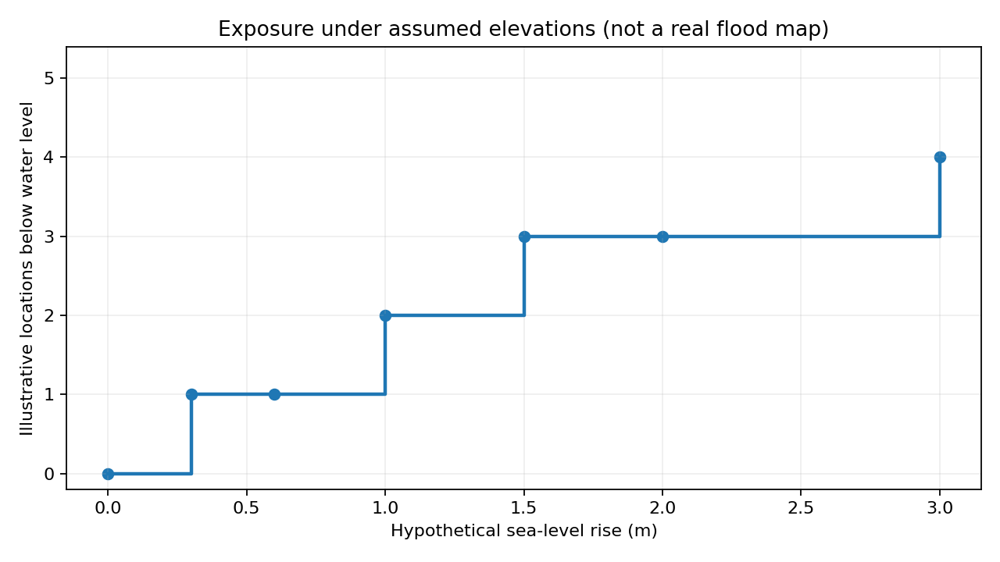

Research question
Why can the same rise in sea level affect coastal locations differently?
Original Python scenario model · Educational illustration
How might rising water affect coastal places at different elevations? I built a reproducible Python model to test five fictional sites. This is a scenario exercise, not a flood prediction.

At +1 meter, 2 of 5 assumed sites are below the modeled waterline. At +3 meters, 4 of 5 are below it. These results reflect the chosen elevations, not observed flooding.
View Python code · Download results CSV · Read methods and limitations
Higher mean sea levels can increase coastal flood risk, especially in low-lying areas. Real risk assessment needs elevation maps, local water-level records, storm surge and flood protection data. This project demonstrates scenario modeling and reproducible analysis, not a geographic forecast.
Scientific background: NASA Sea Level Change and NOAA Sea Level Rise Viewer.
Why can the same rise in sea level affect coastal locations differently?
Relative sea level combines ocean changes with local land movement and elevation.
I used a simple scenario model with assumed coastal elevations to demonstrate differences in exposure.
Lower assumed elevations become exposed earlier in the scenario. The results illustrate sensitivity to elevation.
These are hypothetical scenarios and not verified flood predictions. Real coastal risk analysis needs local NOAA measurements and elevation maps.
Open the editable research workbook in Google Sheets and the presentation in Google Slides by uploading the downloaded files to Google Drive.
Hypothetical elevations only; not a NOAA forecast or real flood map.